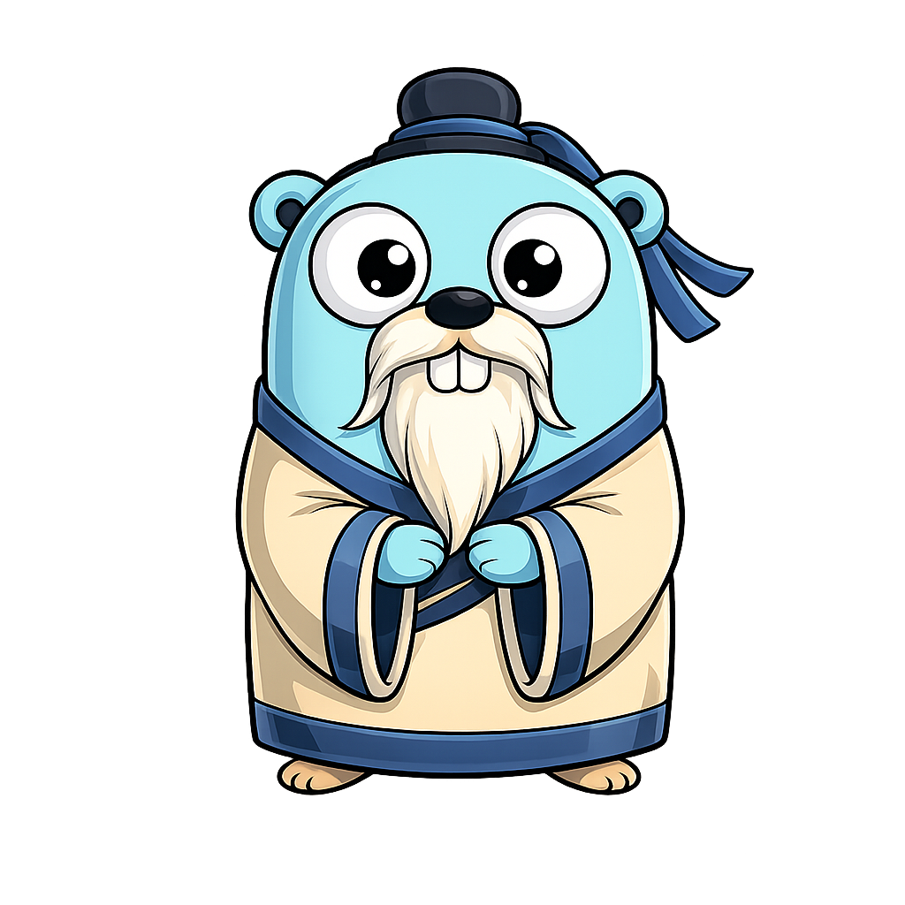

conficius
Dotfile links, package updates, and vulnerability checks. A small tool for tending to your workstation.
See what will change before making it happen.

Your setup.
In its place.
Keep your dotfiles in one repository with conficius.toml. Link individual files or whole folders to where your tools expect them. Package settings live separately in a central config.toml.
Review changes before applying them. Existing files and folders stay protected. Generated history and caches belong in your dotfiles’ .gitignore.
Know what’s
on your machine.
See installed tools, find available updates, and choose what to upgrade. Profiles enable or disable managers and name project roots; native manifests and lockfiles remain the version authority.
Browse compact package rows in the TUI. Press p to choose a profile for the session, or r to reload package settings and projects. Missing dotfiles are a neutral notice, not a package failure.
conficius packages outdated --profile work
conficius packages update --global --pm npm
conficius-tui --package-config ~/.config/conficius/config.tomlUpdates preview by default; --apply runs native commands. Online Homebrew checks run brew update before checking outdated packages, so previews can refresh metadata. Package updates have no universal rollback.
| Manager | Where | What you can do |
|---|---|---|
| mise | Machine + projects | List, check updates, upgrade |
| Homebrew | Machine | List, check updates, upgrade |
| npm | Machine + projects | List, check updates, upgrade |
| mas | Mac App Store | List, check updates, upgrade |
| uv | Installed tools | List, check updates, upgrade |
| pipx | Machine | List, check updates, upgrade |
| Poetry | Projects | List, check updates, upgrade |
| pnpm | Projects | List, check updates, upgrade |
| Cargo | Machine + projects | List only |
| Yarn | Projects | List only |
| Bun | Projects | List only |
| Go | Installed binaries | List, check updates, upgrade |
| apt | Machine (Linux) | List, check updates from cached lists only; Linux-only TUI Update package cache (c, currently APT); no upgrades |
Check the
known risks.
Check your packages against published vulnerability information.
Information comes from OSV (Open Source Vulnerabilities) and ENISA’s European Vulnerability Database (EUVD).
How checks workPick your
terminal.
conficius for commands. conficius-tui for a keyboard-driven interface. Install either or both on macOS or Linux.
Download your platform’s archive from GitHub releases, verify its checksum, and put the extracted binary on your PATH.
Early beta. Your package managers must already be installed.
Installation and first runThe details,
when needed.
Independent dotfiles and package config, practical profiles, CLI and TUI examples, supported managers, and update safeguards with their current limits.
Package config defaults to $XDG_CONFIG_HOME/conficius/config.toml (~/.config/conficius/config.toml when unset). macOS also supports ~/Library/Application Support/conficius/config.toml; having both is a conflict. Use conficius config layout --xdg or --os-native to preview relocation, then --apply to write it with the old config retained as a backup.